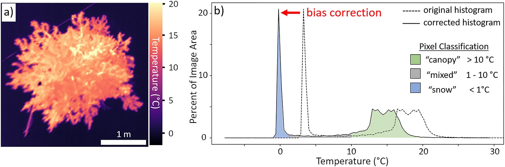
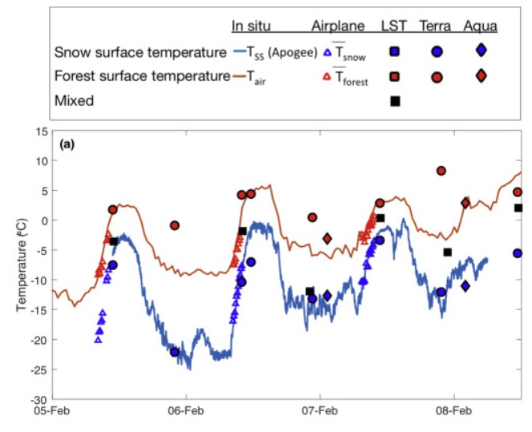

As seasonal snow that falls in the mountains melts, it becomes a critical source of water for humans and the natural environment humans depend on. Our ability to predict when snow will melt, how much will melt, and how those melt patterns are changing could be improved with better remote sensing observations such as satellite measurements. By taking infrared (IR) images of snow-covered areas, we can map snow surface temperatures for large regions. However, all remote sensing observations have tradeoffs between spatial resolution (spatial resolution is the size of the land surface captured within an individual image pixel ) and temporal resolution (temporal resolution is the time between repeat observations). In this project we are working towards developing improved snow-surface temperature maps derived from IR remote sensing observations by:
- Understanding how these tradeoffs (e.g. spatial vs. temporal resolution) and other properties of remote sensing (such as the electromagnetic wavelengths of observations and the geometry with which those electromagnetic waves hit the earth) impact the utility of different remote sensing sources
- Testing methods (e.g. spectral mixture analysis, sensor fusion, downscaling) of retrieving finer spatial and temporal resolution snow-surface temperature information by combining multiple remote sensing observations

Challenges Facing IR Observation of Surface Snow Temperatures
Maps of snow-surface temperature at the finest spatial resolutions (cm-scale) can reveal in detail the interactions between forests and snowpack that involve sunlight, shading, warming of snow by trees, forest litter, and albedo. To create these maps, small thermal IR cameras have been mounted on drones flown over small-scale study areas that are much smaller than one square kilometer in size. To cover larger areas much greater than one square kilometer, we have also used thermal IR cameras mounted on an aircraft which can provide meter-scale spatial resolution images.
The accuracy of surface temperature maps produced by these airborne IR systems are impacted by their spatial resolution and view angles. In forested mountain watersheds, some pixels will overlap with both snow and trees, recording a temperature signal that is a mixture of the cold snow and warmer trees. The low cost, uncooled, broadband IR cameras used for airborne surface temperature mapping are also subject to other sources of error, and biases which uniformly shift the recorded temperatures up or down. Sensor nonuniformity and vignetting (see figure S1a of this paper for an example of sensor nonuniformity) can cause errors in the reported temperature that vary across the IR image, even when observing a uniform temperature surface such as a melting snow surface. Temperature changes to the camera itself from the ambient air, direct sunlight, or self-heating from the electronics can also introduce biases to these airborne IR images.
In Pestana et al. (2019) we used coincident observations of snow, water, and tree canopy temperatures taken in Sagehen Creek, California USA, and Davos, Switzerland to assess how all of these factors influenced very fine spatial resolution (cm-scale) IR imagery from a drone and meter-scale resolution IR imagery from an aircraft. The known temperature of melting snow was used to calibrate the IR imagery to correct for the rapidly changing temperature biases of the cameras. Additionally, the observed temperatures of mixed pixels were found to depend not only on the spatial resolution of the measurement but also on the forest density, distribution, and the view angle of observations.
Satellite IR Observations
In satellite imagery with spatial resolutions of about 1 km, any IR pixel in a snowy, forested mountain scene will be a mix of snow and trees. A spectral unmixing method that can resolve the snow-surface and forest canopy temperatures that contribute to a mixed-pixel temperature reading was demonstrated in Lundquist et al. (2018) for a study area in the upper Tuolumne River Basin in the Sierra Nevada of California. Multispectral imagery from the IR bands of MODIS (the Moderate Resolution Imaging Spectroradiometer onboard NASA’s Terra and Aqua satellites) were used to retrieve separate snow and forest temperatures for each mixed-pixel. The accuracy of these computed temperatures were then evaluated against ground-based and meter-scale airborne IR observations.
The MODIS instruments on NASA Terra and Aqua satellites together provide four observations per day for mid-latitude mountain ranges. For distributed models that try to predict snowmelt hourly, finer temporal resolution (more frequent) satellite observations would be needed to evaluate or assimilate into those models. Geostationary weather satellite imagery, such as from NOAA’s Geostationary Operational Environmental Satellite (GOES) Advanced Baseline Imagers (ABI), take images at 5 minute intervals with similar multispectral bands as MODIS. Ongoing work is evaluating:
- How do the coarser spatial resolution (2+ km scales) and off-nadir view angles impact the surface temperatures seen by GOES ABI, especially in comparison with other satellite imagers such as MODIS and ASTER?
- Can separate snow and forest temperatures be retrieved from GOES ABI multispectral imagery at sub-hourly temporal resolutions?
- Can finer spatial resolution surface temperature information be retrieved from GOES ABI imagery through downscaling or sensor fusion (with other satellite imagers) methods?